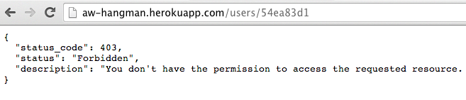
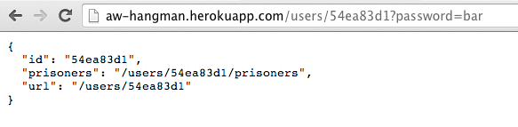

- Metto
<meta charset="UTF-8"/>nellaheaddel documento - Metto
<meta charset="ISO-8859-1"/>

<!DOCTYPE html> in testa al documento, l'aspetto grafico della pagina cambia leggermente.
Argomenti: HTTP, URI, URL (slides)
Per eseguire questi esercizi usa Linux oppure un Mac. Non Windows. Se non hai una macchina Linux, puoi usare una macchina virtuale: scarica VirtualBox e installaci sopra Ubuntu. Ti consiglio di scaricare la macchina virtuale prefabbricata da http://virtualboxes.org/images/ubuntu/
Installa netcat (nc).
Abbiamo usato nc per interrogare un server che permette di giocare a "hangman" (in Italiano e' il gioco dell'"impiccato" o del "prigioniero"). Consiste nell'indovinare una parola di cui conosciamo soltanto la lunghezza. Possiamo proporre una lettera; se la parola da indovinare contiene questa lettera, verra' mostrata per esempio cosi': ***e**e
L'indirizzo del server: http://aw-hangman.herokuapp.com/
Esegui il seguente esercizio, seguendo le istruzioni passo a passo. Nota: in laboratorio abbiamo usato il tool netcat, ma sulla versione che ho pubblicato su Heroku netcat non funziona. Lo sostituiamo con telnet. (Se vuoi sapere il motivo, e' che formalmente la fine linea va specificata con due byte: CR e LF. Con netcat, il tasto invio manda soltanto LF. Telnet invece li invia entrambi).
Questo server non ha le istruzioni, ma dalle sue risposte possiamo dedurre come interrogarlo.
Lo interrogo con
telnet aw-hangman.herokuapp.com 80
GET / HTTP/1.1
host: aw-hangman.herokuapp.com
<invio>
Quello che ho scritto sopra significa: eseguo il comando telnet aw-hangman.herokuapp.com 80 sul terminale di Unix, e poi scrivo o copiaincollo le righe seguenti. La scritta <invio> significa che per completare il messaggio devo mandare una riga vuota.
Cosi' facendo ottengo
HTTP/1.1 200 OK
Content-Type: application/json; charset=UTF-8
Content-Length: 32
Server: Jetty(6.1.26)
{"index":"/",
"users":"/users"}
Il formato di questa risposta si chiama JavaScript Object Notation (JSON). Viene spesso utilizzato per realizzare servizi web. Questa risposta mi dice che ci sono due url che posso interrogare: http://aw-hangman.herokuapp.com/ (la url che ho appena interrogato) e http://aw-hangman.herokuapp.com/users.
Se proviamo a interrogare quest'ultima che cosa otteniamo?
telnet aw-hangman.herokuapp.com 80
GET /users HTTP/1.1
host: aw-hangman.herokuapp.com
<invio>
HTTP/1.1 405 Method Not Allowed
Content-Type: application/json; charset=UTF-8
Content-Length: 103
Server: Jetty(6.1.26)
{"status_code":405,"status":"Method not allowed",
"description":"Use POST on /users to create a user"}
Questo ci dice che il metodo GET non e' ammesso per questa url. Che cosa facciamo allora? Seguiamo il suggerimento. Quello che vogliamo fare a questo punto e' creare un nuovo utente.
telnet aw-hangman.herokuapp.com 80
POST / HTTP/1.1
host: aw-hangman.herokuapp.com
<invio>
HTTP/1.1 400 Bad Request
Content-Type: application/json; charset=UTF-8
Content-Length: 89
Server: Jetty(6.1.26)
{"status_code":400,"status":"Bad Request",
"description":"Parameter 'name' is required"}
Hmmm. Apparentemente dobbiamo aggiungere un parametro "name". Proviamo:
POST / HTTP/1.1
host: aw-hangman.herokuapp.com
Content-Type: application/x-www-form-urlencoded
Content-length: 10
name=pippo
Il formato della richiesta POST e' come sopra. I parametri vengono passati nel body. Otteniamo
HTTP/1.1 400 Bad Request
Content-Type: application/json; charset=UTF-8
Content-Length: 93
Server: Jetty(6.1.26)
{"status_code":400,"status":"Bad Request",
"description":"Parameter 'password' is required"}
Aha! Manca un'altro parametro. Aggiungiamolo:
POST / HTTP/1.1
host: aw-hangman.herokuapp.com
Content-Type: application/x-www-form-urlencoded
Content-length: 26
name=pippo&password=secret
Questa volta otteniamo:
HTTP/1.1 303 See Other
Content-Type: application/json; charset=UTF-8
Location: http://aw-hangman.herokuapp.com/users/551350b3
Content-Length: 71
Server: Jetty(6.1.26)
{"status_code":201,"status":"Created",
"location":"/users/551350b3"}
Come possiamo vedere, un nuovo utente e' stato creato con id 551350b3.
Se seguiamo la nuova url otteniamo
GET /users/551350b3 HTTP/1.1
host: aw-hangman.herokuapp.com
<invio>
HTTP/1.1 403 Forbidden
Content-Type: application/json; charset=UTF-8
Content-Length: 181
WWW-Authenticate: Basic realm="hangman"
Server: Jetty(6.1.26)
{"status_code":401,"status":"Unauthorized",
"description":"You don't have the permission to access the requested resource."}
Direi che le ragioni del server sono comprensibili. Abbiamo creato un utente con una password, e ora per accedervi dobbiamo fornire le credenziali. Lo header WWW-Authenticate mi invita ad autenticarmi con il metodo Basic authentication. In pratica devo concatenare le credenziali con il due-punti: pippo:secret e poi codificarle con Base64. Posso usare la funzione btoa di Javascript; basta aprire la console javascript e digitare btoa("pippo:secret") e ottengo cGlwcG86c2VjcmV0. Da qui:
GET /users/551350b3 HTTP/1.1
host: aw-hangman.herokuapp.com
authorization: Basic cGlwcG86c2VjcmV0
<invio>
HTTP/1.1 200 OK
Content-Type: application/json; charset=UTF-8
Content-Length: 84
Server: Jetty(6.1.26)
{"id":"551350b3",
"prisoners":"/users/551350b3/prisoners",
"url":"/users/551350b3"}
Da questo momento in poi prosegui l'esercizio da solo. Il risultato della ricerca precedente ci da' una nuova url da esplorare. Apparentemente ogni user ha dei prisoners. Il meccanismo da usare sara' lo stesso: con GET vedremo che la lista dei nostri prisoners e' vuota. Ne potremo creare uno facendo una POST alla url dei prisoners del nostro utente. Se la POST ha successo, ci verra' restituita la URL del nostro prigioniero, che avra' la forma /users/123/prisoners/456. Facendo GET a questa url osserviamo lo stato del gioco. Facendo POST a questa url, potremo tentare di indovinare, una lettera per volta.
Riesci a vincere? :-)
Materiali per approfondimenti facoltativi
Argomenti: HTML, Web Standards, Character Encodings (slides)
Approfondimenti facoltativi
Costruire alcune form HTML che ci permettano di giocare a hangman in maniera più agevole. Nota bene: la interfaccia utente che costruiamo qui è molto rozza, ma è il massimo che possiamo fare senza programmare.
Scrivi un file hangman.html che contenga:
<!DOCTYPE html>
<html>
<head>
<meta charset="utf-8" />
<title>Hangman Client</title>
</head>
<body>
<h1>Hangman!</h1>
<form action="http://aw-hangman.herokuapp.com/users" method="post">
<p><label for="name">Name</label><input type="text" name="name" value=""/></p>
<p><label for="password">Password</label><input type="text" name="password" value=""/></p>
<p><input type="submit" value="Create user"/></p>
</form>
</body>
</html>
Apri il file in un browser, riempi i campi e premi "Create user". Se tutto funziona correttamente, avremo inviato una POST al server, il quale risponderà con una redirezione. Nel browser vedremo qualcosa tipo:

Che cosa è successo? È successo che il browser ha cercato di fare la redirezione a http://aw-hangman.herokuapp.com/users/54ea83d1, ma non ha fornito il parametro "password" sulla query string. Di conseguenza, l'applicazione ha risposto che non siamo autorizzati a visitare questa url. Ma la creazione dell'utente ha avuto successo! Ce ne accorgiamo perché la url nella barra degli indirizzi del browser è cambiata. Ora c'è l'id dell'utente appena creato.
Ricorda quello che abbiamo detto alla lezione 1: dopo il post, usualmente abbiamo una redirect!
Per confermare che quello che dico è vero, prova ad aggiungere la password nella query string. Vediamo così il nostro user.

A questo punto sappiamo l'id del nostro utente e sappiamo la password. La strada è aperta: bisogna scrivere un'altra form per creare un prisoner. Siamo costretti a cablare l'id dell'utente nel codice html, il che significa che se volessimo usare un'altro utente, dovremmo cambiare il codice html. Come dicevo, questa interfaccia utente è rozza, ma è il massimo che possiamo fare dato quello che sappiamo fino ad ora.
Scrivi una nuova form e crea un prisoner. Ricora che in tutte le form che fai da questo momento in poi dovrai aggiungere un campo nascosto che fornisce la password. Ricorda anche di non spaventarti se l'applicazione risponde con un codice 403. I casi sono due: o la tua richiesta non è andata a buon fine, e non e' stato creato niente; oppure il prisoner è stato creato, e lo vedi da come cambia la barra degli indirizzi del browser.
Una volta che hai creato un prisoner, devi trovare la parola! Crea un'altra form che ti permetta di inserire agevolmente le lettere. Anche qui: l'output dell'applicazione sul browser sarà sempre un messaggio di errore. Per vedere lo stato del prigioniero, ricarica la url nel browser aggiungendo la password sulla barra degli indirizzi.
<meta charset="UTF-8"/> nella head del documento<meta charset="ISO-8859-1"/>
<!DOCTYPE html> in testa al documento, l'aspetto grafico della pagina cambia leggermente.
id e class?Argomenti: Cascading Style Sheets (CSS), applicare stili a documenti HTML, creare layout di pagina con CSS (slides).
Scarica il repository degli esercizi. Le istruzioni sono dentro.
Studiare questi articoli:
Esempi di domande d'esame
Non è necessario imparare a memoria tutte le proprietà e i loro possibili valori. E' necessario però conoscere per lo meno le proprietà che usiamo negli esempi visti a lezione e nell'esercizio (vedi più avanti).
Approfondimenti facoltativi
Argomenti: Il linguaggio JavaScript. Programmazione funzionale, closures. Programmazione a oggetti; prototipi; JSON. Manipolazione del DOM. Gestione degli eventi. Test unitari in JavaScript. (slides)
Studiare:
Quando si risolvono questi esercizi, ricordare di tenere sempre aperta nel browser la console JavaScript!!!
<form id='my-form'>
<input type="text" id="max" value="10">
<input type="submit" value="Euler 1">
</form>
<p id="result"></p>
<script>
window.onload = function() {
var form = document.getElementById("my-form")
var max = document.getElementById("max")
var result = document.getElementById("result")
form.onsubmit = function() {
result.innerHTML = "Risultato: " + euler1_problem(max.value);
return false;
}
}
</script>
Argomenti: Ajax e jQuery (slides su Ajax e slides su jQuery da pagina 4 a 27 comprese.)
Studiare la documentazione della funzione $.ajax di jQuery
Scaricare il progetto . La maniera consigliata di farlo è tramite il comando git clone https://github.com/xpmatteo/aw-hangman-client
L'obiettivo è di creare un client ajax per il server hangman della prima lezione. Esegui questi passi; a ogni passo verifica di avere ottenuto il risultato desiderato. Carica sempre la pagina html tenendo aperta la console JavaScript.
Devi essere in grado di completare una partita!
Tieni conto che per semplificare le cose, ho tolto la richiesta di autenticazione del server.
Se non sai come iniziare, studia il codice qui sotto:
var player_name;
var player_password;
var player_url;
var current_game_url;
function format_json(json) {
return JSON.stringify(json, null, 2)
}
function on_error(xhr) {
console.log("error: " + JSON.stringify(xhr))
$("#output").text(xhr.responseText)
$("#spinner").hide()
}
function on_register_new_user_success(data) {
console.log("success: " + JSON.stringify(data))
player_url = data.location;
$("#output").text("New user created: " + format_json(data))
$("#make-new-user").hide()
$("#current-game").show()
$("#spinner").hide()
}
function register_new_user() {
$("#spinner").show()
player_name = $("input[name='name']").val();
player_password = $("input[name='password']").val();
$.ajax({
type: "POST",
url: "http://aw-hangman.herokuapp.com/users",
data: {
name: player_name,
password: player_password,
},
success: on_register_new_user_success,
error: on_error
})
return false;
}
function on_get_current_game_success(data) {
console.log("Get current game: " + JSON.stringify(data))
$("#spinner").hide()
$("#output").text("New game created: " + JSON.stringify(data, null, 2) )
$("#prisoner").text(data.prisoner.word)
// ... show all the fields...
$("#guess-form").show()
}
function on_new_game_success(data) {
console.log("New game created: " + JSON.stringify(data))
current_game_url = data.location
$.ajax({
type: "GET",
url: "http://aw-hangman.herokuapp.com" + current_game_url,
success: on_get_current_game_success,
error: on_error,
})
}
function new_game() {
$("#spinner").show()
$.ajax({
type: "POST",
url: "http://aw-hangman.herokuapp.com" + player_url + "/prisoners",
success: on_new_game_success,
error: on_error,
})
return false;
}
$(document).ready(function() {
$('#make-new-user').submit(register_new_user)
$('#new-game').click(new_game)
})
Video su JavaScript (facoltativo:) Douglas Crockford on JavaScript - Act III: Function the Ultimate
Un libro su JavaScript gratuito in alternativa a Resig: http://eloquentjavascript.net/
(Facoltativo) Una maniera divertente di imparare JavaScript: superare le sfide di http://coderbyte.com/CodingArea/Challenges/
(Facoltativo) In alternativa al precedente: JavaScript Koans
Argomenti: Servlet API. Discussione su servlet container piuttosto che server embedded. (slides)
Esercizio svolto in laboratorio: https://github.com/xpmatteo/aw-servlet-exercises (le istruzioni sono nel README). Assicuratevi di scaricare la branch "lesson-6-2015"!!.
Letture facoltative: The Unix Way vs. the Java Enterprise Way
Argomenti: soluzione esercizio della volta precedente. La soluzione del prof è nella branch https://github.com/xpmatteo/aw-servlet-exercises/tree/lesson-7-2015
Esercizio svolto in laboratorio: https://github.com/xpmatteo/aw-servlet-exercises/tree/lesson-7-2015 (le istruzioni sono nel README). Assicuratevi di scaricare la branch "lesson-7-2015"!!.
Argomenti: soluzione esercizio della volta precedente. La soluzione del prof è nella branch https://github.com/xpmatteo/aw-servlet-exercises/tree/lesson-8-2015. Uso dei test automatici per velocizzare lo sviluppo.
Studiare il Capitolo 5 di Flexible, Reliable Software (pdf).
Esercizio svolto in laboratorio: https://github.com/xpmatteo/aw-servlet-exercises/tree/lesson-8-2015 (le istruzioni sono nel README). Assicuratevi di scaricare la branch "lesson-8-2015"!!.
Argomenti: come installare un'applicazione in produzione (deployment). Uso dei sistemi di version control. Uso di Maven, Git ed Heroku.
L'esercizio è descritto nel README di questo progetto: https://github.com/xpmatteo/aw-servlet-exercises/tree/lesson-9-2015. Contiene anche la soluzione all'esercizio della volta precedente.
Da conoscere: i comandi di git init, status, add, commit, log, diff, clone, push, pull. Studiare Git Basics. Guardare il video Git Basics.
Da conoscere: i comandi di maven clean, compile, package. Studiare il tutorial di maven. Puoi, se ti serve, cercare altre informazioni sul getting started di maven.
Studiare l'introduzione a Heroku.
Argomenti: persistenza. Come usare il database in Java. Il pattern "repository".
Slides: 2015-aw-lezione-10-persistenza.pdf.
L'esercizio è descritto nel README di questo progetto: https://github.com/xpmatteo/aw-servlet-exercises/tree/lesson-10-2015.
Argomenti: collegare la interfaccia utente al backend. Continuiamo a implementare il repository.
L'esercizio è descritto nel README di questo progetto: https://github.com/xpmatteo/aw-servlet-exercises/tree/lesson-11-2015.
Argomenti: Sessioni, autenticazione e autorizzazione. Cross-site scripting. Uso di template per evitare vulnerabilita' XSS.
Studiare la mia dispensa sulle sessioni.
Leggere la documentazione di Mustache JS.
Leggere https://www.owasp.org/index.php/Cross-siteScripting(XSS)
Leggere SQL Injection Attacks by Example
L'esercizio è descritto nel README di questo progetto: https://github.com/xpmatteo/aw-servlet-exercises/tree/lesson-12-2015.
(Facoltativo) Google TechTalks: How To Break Web Software — A look at security vulnerabilities in web software